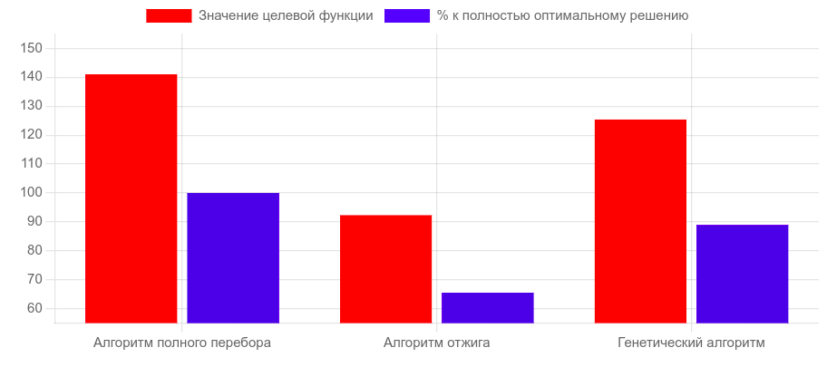
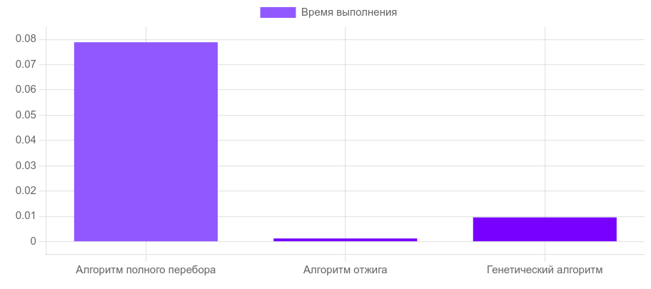
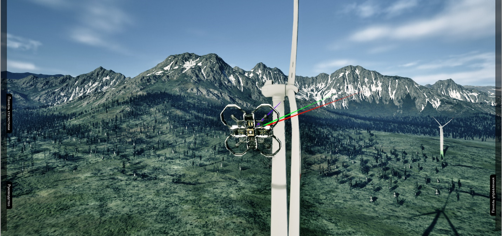
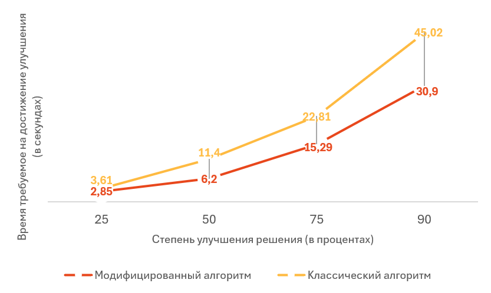

Мавроматидис В. Ю.
Научный руководитель: ассистент каф. САПР Данильченко Е. В.
Южный федеральный университет
ИКТИБ, Таганрог
mavromatidis@sfedu.ru
В статье рассматривается применение алгоритмов на основе эволюционных методов в сфере прогнозирования неисправностей на ветрогенераторных электростанциях. Производится анализ эффективности генетического алгоритма в прогнозировании по сравнению с известными методами.
ВЕТРОГЕНЕРАТОРЫ, БИОИНСПИРИРОВАННЫЕ АЛГОРИТМЫ, ПРОГНОЗИРОВАНИЕ, ЭВОЛЮЦИОННЫЕ МЕТОДЫ, ГЕНЕТИЧЕСКИЙ АЛГОРИТМ.
В настоящее время для обслуживания ветрогенераторов привлекаются альпинисты для визуальных осмотров и используются беспилотные летательные аппараты, управляемые с земли. Хотя эти методы выполняют свою функцию, они требуют значительных временных и финансовых затрат, а также не обеспечивают возможности прогнозирования неисправностей и их своевременного устранения.
В рамках проекта “Специализированные дроны для прогнозного обслуживания ветрогенераторов” для решения данной проблемы были проведены исследования возможностей применения биоинспирированных алгоритмов на основе эволюционных вычислений для прогнозирования возникновения эксплуатационный неисправностей на ветрогенераторных электростанциях.
Генетический алгоритм (ГА)— это эвристический алгоритм поиска, основанный на применении методов естественного отбора и эволюции, и используемый для решения задач моделирования, оптимизации и прогнозирования.
Ключевые функции генетического алгоритма:
1) Создание первоначальной популяции;
2) Мутация;
3) Кроссигновер;
4) Вычисление приспособленности (fitness-функция);
5) Турнирный отбор.
Для более подробного описания способа реализации данных методов в разработанном алгоритме приведен псевдокод:
Псевдокод 1. Создание начальной популяции
vector
vector
for (int i = 0; i < size; ++i) {
for (int j = 1; j < num_nodes; ++j) {
population[i][j] = {
rand() % 5, // blades_mechanical_damage
rand() % 5, // flaps_condition
rand() % 5, // corrosion
rand() % 5, // icing
rand() % 5, // rotary_mechanism
rand() % 5, // wind_sensor
};
}//Заполняем параметры случайными числами от 0 до 5
}
return population;
}
Первоначальная популяция формируется путем присвоения каждому показателю случайно выбранного целочисленного значения от 0 до 5.
Псевдокод 2. Мутация
void mutate(std::vector
for (size_t i = 1; i < individual.size(); ++i) {
if (static_cast
individual[i].flaps_condition = 5 - individual[i].flaps_condition;
individual[i].blades_mechanical_damage = 5 - individual[i].blades_mechanical_damage;
individual[i].corrosion = 5 - individual[i].corrosion;
individual[i].icing = 5 - individual[i].icing;
individual[i].rotary_mechanism = 5 - individual[i].rotary_mechanism;
individual[i].wind_sensor = 5 - individual[i].wind_sensor;
}
}
}
Функция мутации принимает в качестве параметров одного из “индивидов”, и значение mutation_rate, от которого зависит количество мутирующих параметров данного индивида. Далее случайно выбранные показатели меняются.
Псевдокод 3. Кроссинговер
std::vector
std::vector
for (size_t i = 1; i < parent1.size(); ++i) {
child[i] = (rng() % 2) ? parent1[i] : parent2[i];
}
return child;
}
С помощью функции кроссинговера, представленной в псевдокоде 3, из двух родительских индивидов формируется индивид потомка. Случайно выбранные параметры в равном количестве наследуются от каждого из родителей.
Псевдокод 4. Fitness-функция
double fitness(const std::vector
double fitness_value = 0.0;
for (int node = 1; node < G.size(); ++node) {
const auto& state = individual[node];
fitness_value += state.flaps_condition * 3;
fitness_value += state.blades_mechanical_damage * 2;
fitness_value += state.corrosion * 1;
fitness_value += state.icing * 0.1;
fitness_value += state.rotary_mechanism * 0.5;
fitness_value += state.wind_sensor * 0.5;
}
return fitness_value;
}
В псевдокоде 4 показана целевая функция, которая определяет уровень “приспособленности индивида”. В данном случае функция fitness определяет, насколько оптимальным является каждое найденное решение.
Псевдокод 5. Турнирный отбор
vector
vector
for (int i = 0; i < k; ++i) {
int ind = rng() % population.size();
selected.push_back(ind);
}
int best = selected[0];
for (int i = 1; i < k; ++i) {
if (fitnesses[selected[i]] > fitnesses[best]) {
best = selected[i];
}
}
return population[best];
}
После выполнения всех предыдущих операций и вычисления приспособленности для индивида последующая популяция формируется методом турнирного отбора наиболее приспособленных индивидов, т. е. решений, показавших наиболее высокие значения целевой функции. Остальные, менее приспособленные индивиды, отсеиваются таким образом, чтобы размер популяции всегда оставался постоянным.
В ходе данного исследования был проведен эксперимент, в котором разработанный алгоритм сравнивался с известными методами решения подобных задач, такими как алгоритм полного перебора и алгоритм отжига.
Для эксперимента данные алгоритмы были применены для решения задачи нахождения оптимального значения целевой функции. В таблице 1, представленной ниже, собраны результаты работы каждого алгоритма.

Рисунок 1 – Сравнение показателей целевой функции и процентое отношение к полностью оптимальному решению

Рисунок 2 – Сравнение времени выполнения алгоритмов
Заключение. Результаты исследования показали, что разработанный генетический алгоритм способен находить значение, достаточно близкое к оптимальному, при затратах времени примерно в 8 раз меньших, чем потребовалось для поиска абсолютного оптимума методом полного перебора. Алгоритм отжига выполняется быстрее, чем алгоритм, основанный на эволюционных методах, но его точность гораздо ниже.
Таким образом, разработанный алгоритм может успешно применяться для решения задач, связанных с прогнозированием неисправностей ветрогенераторов, выдавая результат, близкий к оптимальному, за приемлемое время.
Поддержка. Исследование выполнено за счет гранта Российского научного фонда No 24-71-00035, https://rscf.ru/project/24-71-00035/ в Южном федеральном университете.
1. А.С. Татевосян. Практикум по технологиям разработки алгоритмов интеллектуальных инфориационных систем: Методические указания для проведения лабораторных занятий по дисциплине «Интеллектуальные информационные системы» Омск: Изд-во ОмГТУ , 2008. – 60 с.
Д.М. Хоменко
Научный руководитель: ассистент каф. САПР Данильченко Е. В.
Южный федеральный университет
ИКТИБ, Таганрог
Аннотация. Статья посвящена разработке и программной реализации симуляции маршрутизации и полета БПЛА с применением биоинспирированных алгоритмов искусственного интеллекта. Целью работы является создание платформы для разработки и тестирования алгоритмов маршрутизации БПЛА и моделирования полетов в различных условиях и рабочих зонах. В работе рассматриваются реализация механизма преобразования трехмерного пространства рабочей зоны в двумерное пространство, пригодное для работы с алгоритмами маршрутизации на графах, разработка алгоритмов маршрутизации, основанных на поведении муравьиной колонии, симуляция полета БПЛА с определенными целями. Проводится сравнительный анализ и экспериментальные исследования полученных алгоритмов маршрутизации. В заключительной части статьи рассматривается возможность интеграции разработанной системы в промышленные процессы и ее потенциал для дальнейшего развития.
адаптивный алгоритм, окто-деревья, моделирование, симулирование, маршрутизация, реальное время, БПЛА, модели искусственного интеллекта, роевые алгоритмы, биоинспирированные подходы, муравьиные алгоритмы.
Введение. Задача маршрутизации движения различных устройств, включая беспилотные летательные аппараты (БПЛА, дрон, англ. UAV), является одной из ключевых в современной робототехнике. Данная задача заключается в планировании безопасной траектории движения устройства в рабочей зоне из начального состояния в целевое конечное состояние.
Для решения задач маршрутизации зачастую применяются классические методы на основе графов, дорожных карт, клеточной декомпозиции, потенциальных полей и др. Однако в последнее время с ростом вычислительных мощностей аппаратного обеспечения все более часто успешно применяются эвристические и метаэвристические методы решения задач маршрутизации, вдохновленные природными явлениями и не имеющие строгого математического обоснования. Среди таких методов следует выделить, например, эволюционные методы, метод имитации отжига, роевые алгоритмы, реактивные методы, а также методы искусственного интеллекта: нейросетевые методы, методы нечеткой логики и др. Вышеупомянутые методы лишены недостатков, присущих классическим методам и обладают несомненными преимуществами, гарантируя высокую надежность и скорость поиска решения.
Данная статья описывает программную реализацию алгоритма маршрутизации БПЛА в симулируемой средствами компьютера среде. Применение симуляции при решении целевой задачи позволяет избежать высоких материальных затрат и ускорить создание и совершенствование используемых методов маршрутизации. При этом среда, в которой проводятся испытания, остается максимально приближенной к той, чьи свойства были взяты за основу, что позволяет без труда перенести разработанное ПО из симулируемой среды в реальную.
Снижение размерности пространства маршрутизации. Маршрутизация в трехмерном пространстве – это сложная задача, требующая комплексного подхода, при этом декомпозирование позволяет сильно ее упростить. Один из вариантов декомпозиции задачи предполагает построение на основе исходного трехмерного пространства полного графа маршрутов. Данный переход позволяет снизить размерность пространства с трехмерного до двумерного, что открывает широкие возможности для применения алгоритмов маршрутизации на графе.
Основная задача, решаемая при переходе от трехмерного пространства к двумерному, это нахождение пути между двумя точками исходного пространства и создание двумерной матрицы переходов. При этом прокладываемый путь не должен пересекаться ни с одним объектом выбранного пространства.
Для снижения ресурсных затрат при выполнении маршрутизации перехода между точками призвано разбиение пространства на древовидную структуру, в которой у каждого внутреннего узла ровно восемь «потомков» (окто-дерево). Таким образом гораздо проще определять препятствия и искать обходные пути для маршрутизируемого объекта, так как нет необходимости выполнять поиск пересечения на полной геометрии объектов в симуляции, вместо этого пространство маршрутизации заменяется упрощенной моделью.
Псевдокод 1 демонстрирует реализацию построения матрицы маршрутов на основе контрольных точек (КТ) участвующих в симуляции.
// Определение структур
// Структура звена маршрута
struct CPathNode {
std::vector
std::vector
};
// Структура данных маршрута
struct PathData {
std::vector
float length;
};
// Строка матрицы
struct PathMatrixRow {
std::vector
};
// Матрица маршрутов
struct PathMatrix {
std::vector< PathMatrixRow > matrix;
};
// Класс, реализующий построение полного графа маршрутов
class PathsBuilder {
private:
PathMatrix graph;
PathVolume NavVolume;
public:
// Метод для вызова построения матрицы
PathMatrix BuildPaths(PathVolume domain) {
// Установка домена
NavVolume = domain;
// Очистка матрицы
graph.clear;
// Запуск построения
if(!NavVolume.WaypointsHandler.Waypoints.isEmpty){
InitPathMatrix(graph);
FindPaths(NavVolume.WaypointsHandler.Waypoints);
}
return graph;
}
private:
// Циклическое формирование переходов
void FindPaths(Waypoint points) {
for(int i = 0; i<(points.last-1); i++)
for(int j = i+1; j
PathData path = FindPathBetweenPoints(points[i],points[j],5,1);
graph.SetElem(i, j, path);
graph.SetElem(j, i, InvertPath(path));
}
}
// Метод построения перехода межу контрольными точками
PathData FindPathBetweenPoints(Waypoint W1, Waypoint W2, int smoothing, float timeLimit) {
// Обращение к домену маршрутизации и нахождение маршрута в окто-дереве
// возвращает маршрут
}
void InitPathMatrix(PathMatrix matrix) {
// Инициализация матрицы
// заполняет матрицу нулевыми значениями до необходимого размера
}
PathData InvertPath(PathData path) {
// Инвертирование маршрута
}
// Дополнительные методы
};//>
Алгоритмы маршрутизации на основе поведения колонии муравьев. Как было упомянуто ранее существует множество методов решения исследуемой задачи, однако стоит выделить муравьиный алгоритм из группы роевых, который обладает высокой эффективностью и скоростью нахождения оптимального пути, а также возможностью непрерывного использования [1, 2]. Данный метод основывается на поведении колонии муравьев, которые находятся в поисках добычи. Муравьи, двигаясь испускают феромоны, тем самым формируя различные маршруты, однако феромон со временем испаряется, что приводит к тому, что наиболее длинные маршруты исчезают, уступая наиболее коротким [3, 4, 5].
В данной статье будут затронуты классический и модифицированный варианты алгоритма. В математическую модель алгоритма была включена нормализация масштабов пространства и регулировка соотношения глобального объема феромонов к масштабу пространства. Данная модификация позволяет эффективно использовать алгоритм в пространствах разных размеров. Также алгоритм был модифицирован добавлением процедуры прохода элитных муравьев, которая увеличивает количество феромона на наилучшем маршруте.
Нормализация пространства происходит путем введения делителя дистанции перехода. Таким образом делитель сокращает реальную дистанцию перехода при вычислениях, влияя тем самым на веса переходов, а также на распределение феромона по переходу. Делитель же в свою очередь зависит от конфигурации пространства, чем оно больше, тем больше делитель. Помимо этого, делитель влияет на базовый объем феромона, чем он выше, тем больше феромона будет распределено. При помощи соотношения баланса можно влиять на степень влияния делителя на расстояния переходов и базовый объем феромона, увеличивая один параметр и снижая при этом другой.
Псевдокод 2 описывает программную реализацию модифицированного муравьиного алгоритма.
// Определение структур
// Структура параметров алгоритма
struct AntAlgoParams {
//Параметры алгоритма
};
// Структура строки матрицы булевых значений
struct BoolMatrixRow {
std::vector
};
// Структура булевых значений
struct BoolMatrix {
std::vector
};
// Структура строки матрицы float значений
struct FloatMatrixRow {
std::vector
};
// Структура булевых значений
struct FloatMatrix {
std::vector
};
// Структура ряда весов
struct FloatRoulette {
int pos;
float value;
};
// Структура весов переходов
struct Weights {
std::vector
float weightsSum;
};
// Класс, реализующий алгоритм маршрутизации
class AntAlgorithm {
private:
PathMatrix graph;
TimerHandler mainLoopTimer;
BoolMatrix passed;
FloatMatrix feromone;
int iteration = 0;
int maxIteration = 1;
bool newLoopFlag = true;
int currentPos;
public:
//
// Параметры алгоритма
//
// Метод для вызова выполнения алгоритма
void StartAntAlgo(PathMatrix matrix, AntAlgoParams AAParams) {
SetParams(AAParams);
graph = matrix;
StartMainLoop();
}
private:
void SetParams(AntAlgoParams AAParams) {
// Установка параметров алгоритма
}
void InitData(PathMatrix matrix) {
// Инициализация всех необходимых переменных и массивов
}
void StartMainLoop() {
// Установка таймера итераций
// переданное в функцию событие будет выполняться постоянно
// с указанным периодом, пока таймер не будет остановлен
mainLoopTimer = SetTimerByEvent(iterateLoop_event, updateTime, true);
}
void CheckLoopGates() {
// Проверка разрешений на запуск итерации, передачу маршрута
}
void AssemblePath() {
// Формирует путь и передает его внешним объектам
}
int InitStartPositionAndLoopCount() {
// Выдает алгоритму начальную позицию и количество циклов обработки
}
Weights CalcWeights(int pos, BoolMatrix passed, FloatMatrix feromone,
PathMatrix graph, float feromoneInfl, float distanceInfl) {
// Вычисляет веса переходов
// Возвращает набор весов и индексов вершин ассоциированных с ними
}
Weights CalcProbabilities(Weights weights, BoolMatrix passed, int pos) {
// Вычисляет вероятности переходов
// Возвращает набор вероятностей и индексов вершин ассоциированных с ними
}
int MakeChoise(Weights probabilities) {
// Выбирает случайным образом переход в зависимости от вероятности
}
void MoveToNextPos(int newPos, int *pos, float antCapMul, float feromoneBase,
AntPath *path, BoolMatrix passed, FloatMatrix feromone, PathMatrix graph) {
// Выполняет переход муравья, распределяя феромон
}
void ResetData() {
// Подготовка алгоритма к новой итерации
}
void ValuePostUpdate() {
// Процедуры испарения феромона,
// поиска лучшего маршрута в новом наборе, прохода элитных муравьев
}
void IterateLoop() {
if(CheckLoopGates())
AssemblePath();
if(iteration < maxIteration){
iteration++;
newLoopFlag = false;
int loopCount = InitStartPositionAndLoopCount();
for(int i = 0; i < loopCount; i++){
Weights weights = CalcWeights(currentPos, passed, feromone, graph, feromoneInfl, distanceInfl);
Weights probabilities = CalcProbabilities(weights, passed, currentPos);
int newPos = MakeChoise(probabilities);
MoveToNextPos(newPos, currentPos, UAntCapMul, feromoneBase, path, feromone, passed, graph);
}
MoveToNextPos(startPos, currentPos, UAntCapMul, feromoneBase, path, feromone, passed, graph);
ResetData();
if((iteration % antsValue) == 0){
ValuePostUpdate();
}
newLoopFlag = true;
}
}
// Дополнительные методы
};
Симуляция процедуры анализа состояния ветрогенераторов при помощи БПЛА. В процессе проведения исследований был разработан симулятор в инструментальном средстве Unreal Engine 5, благодаря которому возможна быстрая разработка и тестирование применяемых технологий маршрутизации. Разработанный симулятор предоставляет возможности конфигурирования симулируемой среды, создания упрощенной модели пространства, построения переходов между КТ, выполнения алгоритма маршрутизации, а также выполнения полета БПЛА.
Ниже на рисунке 1 представлена упрощенная модель пространства в виде окто-дерева, которая отображена зелеными линиями, на рисунке 2 показан полный граф переходов между контрольными точками, которые в данном контексте являются ветрогенераторами, на рисунке 3 показан результат маршрутизации модифицированным муравьиным алгоритмом, на рисунке 4 показан полет БПЛА по заданному маршруту.

Рисунок 1 – Окто-дерево пространства, представленное в виде подразделяющейся кубической структуры

Рисунок 2 – Полная сеть переходов между точками

Рисунок 3 – Наилучший маршрут, показанный голубой линией

Рисунок 4 – Дрон выполняет полет по заданному курсу
Эксперимент. Для проведения тестирования эффективности алгоритмов были установлены следующие условия:
- количество вершин в графе должно быть равно 45, их положение не должно меняться от испытания к испытанию;
- период обновления алгоритма должен быть равен 0,04 секунды;
- количество итераций не ограничено;
- размер популяции должен быть ограничен 15 муравьями.
Было выявлено эталонное значение длины маршрута, для графа, состоящего из 45 вершин, это значение равняется 1,500,000 (UE units). На основе эталона было определено неоптимальное решение, которое равно 3,000,000, таким образом возможно построение опорных решений для определения временных затрат на повышение качества маршрута.
Для выявления скоростных характеристик был создан набор опорных значений, включающий в себя:
- 25% качества решения – если длина маршрута меньше, чем 2,700,000;
- 50% качества решения – если длина маршрута меньше, чем 2,250,000;
- 75% качества решения – если длина маршрута меньше, чем 1,870,000;
- 90% качества решения – если длина маршрута меньше, чем 1,650,000;
Фиксация времени будет проводиться с помощью отдельного модуля контроля, который ведет подсчет времени во время процесса нахождения маршрута. Если алгоритм находит решение, которое лучше, чем опорное значение, модуль записывает время, за которое оно было найдено.
В процессе эксперимента было проведено сравнение скорости классического и модифицированного муравьиных алгоритмов. После проведения ряда испытаний были получены результаты от обоих алгоритмов и отображены на графике зависимости качества решения от времени выполнения алгоритмов, который представлен ниже.

Рисунок 5 – График времени затраченного на улучшение решения (чем ниже, тем лучше)
Согласно приведенным результатам, модифицированный алгоритм превосходит классический в скорости нахождения оптимального решения, соответствующего уровням критерия. Для нахождения решения, соответствующего 90% качества модифицированному алгоритму нужно 30,9 секунд, что на 14,12 секунд меньше, чем классическому варианту, который находит такое же по качеству решение за 45,02 секунды.
Исследование показало, что система маршрутизации БПЛА, с применением алгоритмов, основанных на поведении колонии муравьев, демонстрирует высокую точность, надежность и результативность при формировании маршрутов в различных условиях. Использование симуляции при проведении исследования позволило значительно увеличить скорость и простоту разработки, а также расширило возможности интеграции в разные сферы деятельности, таким образом возможно взаимодействие не только с ветрогенераторами, но и с другими объектами, например нефтегазовой промышленности. Таким образом разработанная система имеет потенциал для практического внедрения в процессы объектов промышленности, что может значительно снизить расходы и повысить безопасность.
Перспективы дальнейших исследований включают расширение функциональности системы путем развития средств управления симулируемой средой, обеспечение возможности разработки и интеграции пользователем собственных алгоритмов маршрутизации, без необходимости полной перекомпиляции исходников, внедрение асинхронного выполнения алгоритмов маршрутизации на нескольких потоках в целях улучшения эффективности, производительности и отзывчивости симулятора.
Работа по разработке симуляции маршрутизации БПЛА на основе поведения колонии муравьев для задач анализа состояния ветрогенераторов представляет собой важный шаг в направлении повышения эффективности и безопасности в задачах обслуживания объектов промышленности. Полученные результаты подтверждают потенциал предложенного подхода и готовность его к практическому применению. Дальнейшие исследования и разработки в этой области могут помочь спровоцировать рост различных отраслей промышленности.
Поддержка. Исследование выполнено за счет гранта Российского научного фонда No 22-71-10121, https://rscf.ru/project/22-71-10121/ в Южном федеральном университете.
1. Нейдорф Р.Ф., Полях В.В., Черногоров И.В., Ярахмедов О.Т., "Исследование эвристических алгоритмов в задачах прокладки и оптимизация маршрутов в среде с препятствиями". Известия ЮФУ. Компьютерные и информационные науки, № 16, 2016. С. 2-17.
2. Курейчик В.М., Кажаров A.A., "Использование роевого интеллекта в решении NP-трудных задач". Известия ЮФУ. Технические науки, Т. 120, № 7, Июль 2011. С. 30-36.
3. Кажаров A.A., Курейчик В.М. Модификации муравьиного алгоритма для решения задачи коммивояжера // Труды международной научно-технической конференции "Интеллектуальные системы AIS'08". 2008.
4. Курейчик В.М., Кажаров A.A., "О некоторых модификациях муравьиного алгоритма", Известия ЮФУ. Технические науки, № 4, Апрель 2008. С. 7-12.
5. Кажаров A.A. Модификации муравьиных алгоритмов и их применение к задаче коммивояжера // Сборник трудов 15-й Всероссийской межвузовской научно-технической конференции студентов и аспирантов «Микроэлектроника и информатика-2008». Зеленоград. 2008.